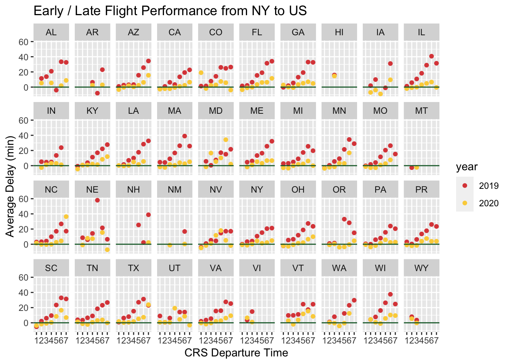

Chapter 5 Results
PROBLEM ONE: Among all the carriers that provide commercial services in U.S., are there any carriers that have major delay problems? For example, the average delay time is over 60 minutes.

The dataframe NY_Jan_delayCount shows the number of delays for each carrier within the January. We plot a simple bar graph to manifest the result more explicitly. Note that this figure only shows the number of times that the delay occurs, on the other side, we need to evaluate the averaged severity of the delays, i.e. the averaged time of the delays for each carrier.

Moreover, we hope to explore the results for concrete delay reasons, i.e. CARRIER_DELAY, WEATHER_DELAY, NAS_DELAY, SECURITY_DELAY and LATE_AIRCRAFT_DELAY,


PROBLEM TWO: Are early flights or late flights more likely to delay? Do origin and destination influence the on-time performance?


## [1] "12" "03" "06" "09" "01" "04" "07" "10" "02" "05" "08" "11"

PROBLEM THREE: Specifically for NYC. If someone wants to come to NYC, which airport should s/he choose to fly to based on the origin city?